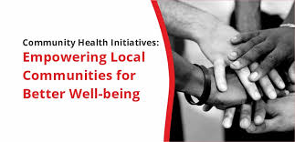
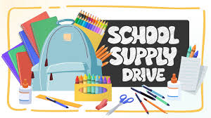

We are actively working on impactful projects that empower young people and improve communities. Explore our current initiatives below.

Empowering young people with entrepreneurship, leadership, and digital skills to help them succeed in life and contribute to their communities.
Support Project
Bringing mobile health clinics, medical checkups, and hygiene training to underserved villages to improve community well-being.
Get Involved
Providing educational materials and support to schools in need, ensuring every child has access to quality learning tools.
Donate NowWorkshops and mentorship sessions focusing on entrepreneurship and innovation among the youth.
Health outreach activities, medical checkups, and awareness campaigns in remote areas.
Distribution of textbooks, uniforms, and basic school supplies to children from low-income families.